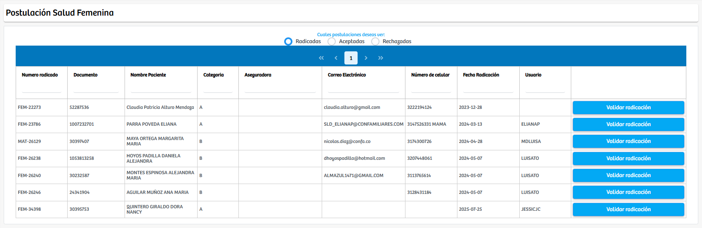
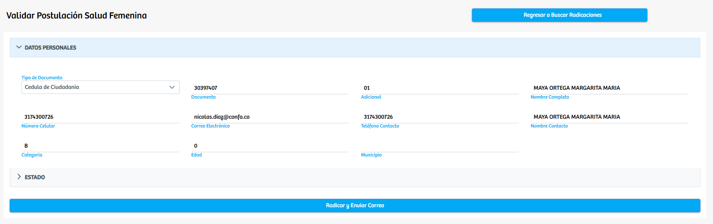
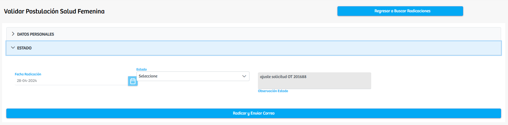

Modulos Sas-Web
Funcionalidades
Radicación Salud Femenina
El módulo Radicación Salud Femenina permite consultar y gestionar todas las postulaciones realizadas dentro del programa de Salud Femenina. La vista principal organiza las radicaciones en tres apartados según su estado actual: Radicadas, Aceptadas y Rechazadas, facilitando así la clasificación y búsqueda de cada registro. En esta tabla se muestran datos relevantes como número de radicación, documento, nombre del paciente, categoría, aseguradora, datos de contacto, fecha de radicación y el usuario responsable del registro.
Cada fila cuenta con el botón “Validar Radicación”, mediante el cual el sistema dirige al usuario a una vista detallada en la que se presentan los datos personales del postulante, tales como tipo y número de documento, nombre completo, número de celular, correo electrónico, categoría, edad y municipio, entre otros. Adicionalmente, esta vista incorpora una sección denominada Estado, donde se refleja el estado actual de la radicación y, en caso necesario, permite modificarlo seleccionando un nuevo estado y registrando observaciones asociadas al cambio realizado.
Dentro de esta misma pantalla, el usuario cuenta con la opción “Radicar y Enviar Correo”, que finaliza el proceso de validación, actualiza el estado de la radicación y gestiona el envío de la notificación correspondiente al postulante. Finalmente, desde esta vista también es posible regresar a la pantalla principal mediante el botón “Regresar a Buscar Radicaciones”, lo cual permite continuar con la validación de otros registros de manera ágil.
